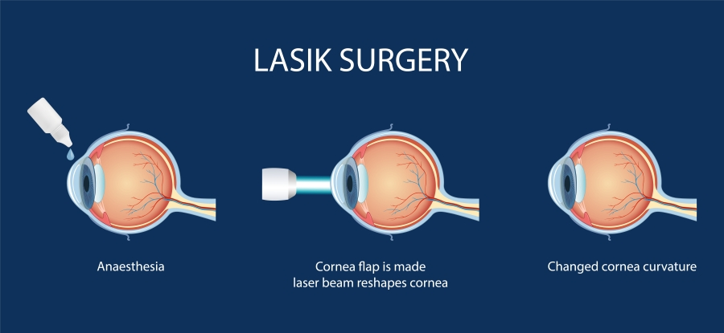
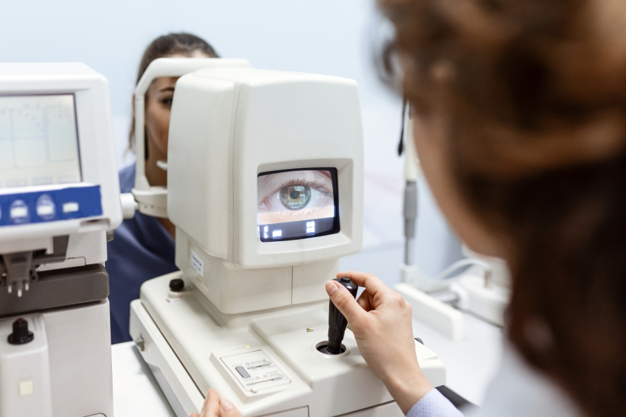
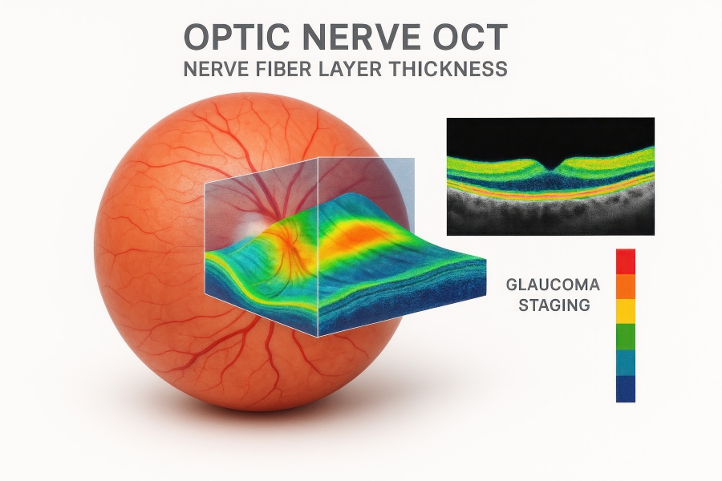
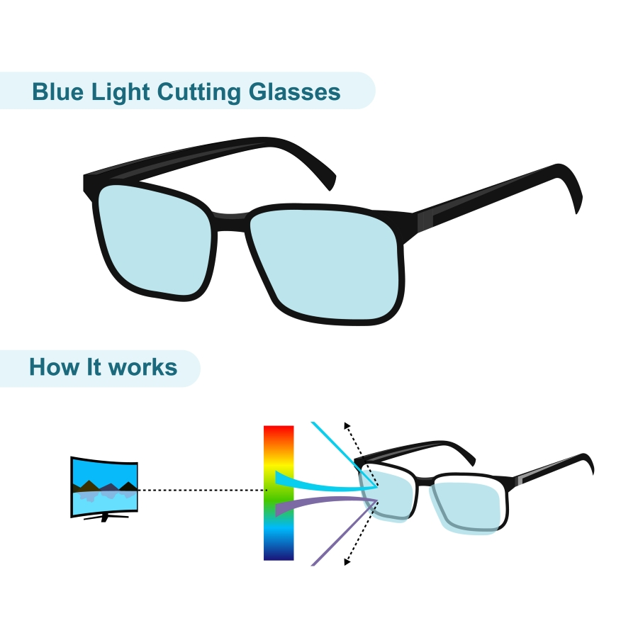

Experience Vcare's Services
At Vcare Opticals, we recommend an annual eyetest to properly maintain your vision, or to check in and take advantage of our services when you
notice any changes to your vision. We've recently brought in new services ontop of our existing care procedures so that our professionals can
solve your vision woes post haste.
Book Appointment
Vcare's Annual Eye Checkup Package Includes the following services:
- Vision Assessment
- A detailed examination of vision clarity, depth perception, and colour vision.
- Eye‑Health Screening
- Checks for early signs of eye diseases such as cataracts and glaucoma.
- Retinal Imaging
- Advanced imaging to analyse retinal health.
- Prescription Update
- Reviewing and updating glasses or contact lens prescriptions.
- Lifestyle & Visual‑Care Discussion
- Guidance on screen habits, lighting, and eye‑care routines.
Vcare's New Vision Care Technologies:
LASIK Vision Correction Technology
Vcare Opticals now offers access to LASIK consultation services, a modern solution for correcting common vision problems such as short‑sightedness, long‑sightedness, and astigmatism. Our optometrists provide detailed pre‑assessment, guidance, and post‑procedure care to ensure patient safety and confidence throughout the process.

Digital Eye Examination System
Vcare Opticals now uses digital eye testing equipment that provides faster and more accurate vision assessments compared to traditional eye charts. These systems help detect vision problems early and improve prescription accuracy.

Optical Coherence Tomography (OCT)
OCT is an advanced scanning technology that creates detailed cross‑section images of the retina. It helps detect serious eye conditions early and is especially useful for monitoring eye health in older adults.

Blue Light & Digital Eye Strain Assessment
With increased screen usage, Vcare Opticals now offers digital eye strain assessments. This service helps identify eye fatigue caused by computers and mobile devices and recommends blue‑light filtering lenses to improve comfort and eye health.

Virtual Eye‑Care Consultations (Tele‑Optometry)
For minor concerns or follow‑ups, Vcare Opticals now provides virtual consultations, allowing customers to receive professional advice from home without visiting the clinic.